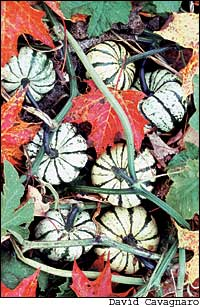
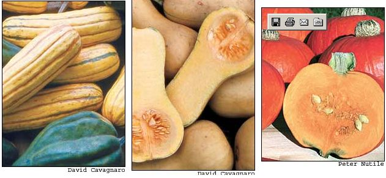
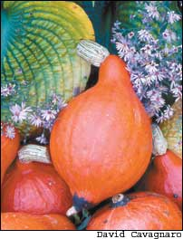
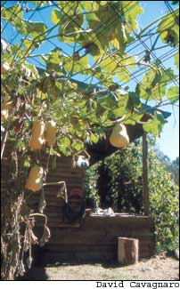
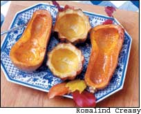
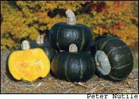
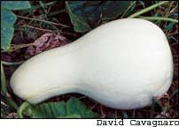
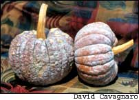
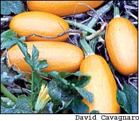

Issue # 211- August/September 2005
What if you could grow a vegetable that has a rich, nutty flavor; is packed with nutrition; adapts readily to soups, pilafs and pies; stores easily for up to six months; and even is pretty to look at? This description fits winter squash, which comes in dozens of different packages, with shapes ranging from acorns and turbans to 30-pound pink bananas. North and South American gardeners have been growing them for more than 9,000 years, and indigenous tribes from Argentina to Oregon each cultivated their unique strain, which often rambled among shriveling corn stalks during the second half of summer.
In an odd turn in culinary history, Americans decided to prefer pumpkins to winter squash. Or did we? Several types of winter squash - acorns, buttercups, delicatas and hubbards - are the same species as most pumpkins (Cucurbita pepo or C. maxima), and most canned “pumpkin” in stores actually is cushaw or butternut squash (C. moschata). So, if you like pumpkin pie but think you might not like squash pie, think again. In fact, any recipe that includes pumpkin or sweet potatoes can be easily adapted for winter squash.
A latecomer to the winter squash fan club, I began eating them several years ago after discovering winter squash soup, in which onions, celery and winter squash mingle with apples in a curried broth. Since then, seedlings have been sprouting from my compost heap (and producing lots of squash); clearly this vegetable wants to be a permanent part of my garden.
“That’s why they’re called trailing squash,” says Minnesotan Martin Diffley, who with his wife, Atina, was named the 2004 Organic Farmer of the Year by the Midwest Organic and Sustainable Education Service. “They followed people to new settlements by sprouting and growing in their trash heaps.”
At their Gardens of Eagen farm, the Diffleys grow 16 types of winter squash, which is easier than choosing only one or two. A truly diverse crop, winter squashes come from four different Cucurbita species, which can grow into a huge range of shapes, sizes and colors. See “Sorting Through Winter Squash,”, to find out which squash fall into which group and how species differ from one another.
There is a perfect winter squash for every climate and palate, but finding one for your area is not a simple quest - unless you are a Midwesterner. “Buttercups have always been the precious ones around here,” Diffley says. After waiting 20 years for an improvement in the old ‘Burgess’ variety, Diffley found ‘Bonbon,’ a 2005 All America Selections (AAS) winner from Johnny’s Selected Seeds, and says it’s worth making the switch from open pollinated (OP) to hybrid. “It’s uniform, vigorous and has the same good flavor of ‘Burgess,’ only better.”
The Asian version of buttercup, kabocha squash, also has many fans, as do three C. maxima varieties - ‘Potimarron,’ ‘Hokkaido’ and ‘Red Kuri’ - that probably started out as the same thing and changed a bit as they traveled the world. Subtle chestnut flavor is this strain’s fame, whereas fast-maturing, North Dakota-bred ‘Gold Nugget’ is still endearing itself to gardeners with its orange softball-sized fruits 40 years after earning the 1966 silver AAS medal.
Buttery texture and user-friendly size aside, all of these squashes (and those of the C. pepo group) are much sought after by squash vine borers - pests that can decimate small garden plantings, but are not as bad in big fields of squash, where the mother moths have more plants to choose from as they seek host plants upon which to lay their eggs.
Both C. maxima and C. pepo squashes have the type of stem that squash borers love - wide and hollow in the middle, with a thick lining of spongy parenchyma, the preferred food of hungry squash borer larvae. However, C. maxima squashes have a way of defending themselves that the C. pepo lack: They vigorously develop supplemental roots where their vines touch the ground. You can improve the borer tolerance of long-vined buttercups by dumping a shovelful of soil over places where you see roots trying to get established in the soil. See “Stick it to Borers,”, for other strategies aimed at managing this pest.
Worth skirmishing with borers, both heart-shaped acorn squash and delicatas (which can look like little striped pumpkins or oblong loaves, depending on the variety) are classified as C. pepo, as is spaghetti squash, which is grown for its pastalike strings. Acorns and delicatas are great for stuffing, and because of their small fruit size, they are usually very productive, spewing out six or more fruits per plant.
Yet, maximum productivity and flavor from C. pepo squash requires that you manage squash borers and squash bugs - half-inch-long shield bugs that weaken plants by sucking plant juices. These are the critters that lay groups of shiny brown eggs on squash leaves, which hatch into long-legged nymphs. Adults overwinter in mulches and other garden debris, and then emerge in early summer, just as squash plants hit their stride. Squash bugs infest other types of squash, too, but they are most damaging to C. pepo varieties, which typically have a limited number of large leaves on compact plants. The loss of only a few leaves to squash bugs will reduce a plant’s vigor, resulting in small, weakly flavored squash.
If you have a terrible squash bug and/or vine borer problem, the best solution is to grow squash beneath floating row covers, which are put over the plants soon after the seeds germinate or seedlings are set out. Be sure to allow plenty of growing room before you bury the row cover edges. Then let your squash grow for four to six weeks and remove the row covers when flowers appear (squash must be pollinated by bees and other flying insects).
When you let pollinating insects in, some pests will join them, but by then the plants will be strong enough to produce well, despite pesky insects.
This row cover protection works especially well with bush-type cultivars, which are not strictly bushy. Molly Jahn, professor of plant breeding at Cornell University, whose team developed two outstanding C. pepo “bush” varieties - ‘Sweet REBA’ and ‘PMR Bush Delicata’ - says the ideal squash starts out bushy, so young plants can be grown under row covers or closely watched for pests, and then has a late adolescent growth spurt when the vines stretch out, fill in and suppress weeds. “You get higher yields per area, especially if you go through and cultivate to remove weeds after the plants are established,” Jahn says.
Beyond their bush habit, the Cornell varieties show excellent taste and high powdery mildew resistance, which is abbreviated as PMR in a variety name. Powdery mildew looks like a spidery dusting of white powder on squash leaves. It weakens plants and shortens their life spans, which results in fewer, less flavorful fruits that also store poorly. If you frequently see powdery mildew on your squash leaves, switching to a resistant variety will increase productivity and enhance your crop’s flavor and nutritional value.
Only a few winter squashes are classified as C. mixta, a species first described in the 1920s that probably originated in Central America and Mexico, and then spread to the American Southwest by the late 1400s. The best known of these are the cushaws, which need up to 115 days of warm weather to produce their 10- to 12-pound bottle-shaped fruits, so they are rarely grown outside the South and Southwest. Yet in their home range, cushaws and other C. mixta, such as ‘Hopi Black Green’ and ‘Tequila Black’ show tremendous tolerance of heat and insects, especially borers. Their seeds are great for roasting, and plant historians think these squashes were first grown for their seeds rather than for their flesh.
Like C. mixta, winter squash classified as C. moschata have thin, ridged stems that make them unattractive to squash vine borers. They also come in several different forms. Familiar butternuts are the most widely grown moschatas, and reliable open-pollinated varieties such as ‘Waltham,’ released in 1970, and Johnny’s ‘Metro PMR’ hybrid have much to offer. Easy to peel, with creamy smooth flesh, long storage potential and high in vitamin A, butternuts also can be picked immature and eaten as summer squash.
“They taste way better than summer squash, and people really like them,” Jahn says. “We’re actually breeding some new butternuts to use as summer-winter squash. They taste great, and the plants don’t shut down like summer squash do. And, if you miss some, they will go on and mature into a butternut.” Some C. moschata also are famous for distinctive flavors, such as the spicy, hazelnutty ‘Futsu Black’ variety from Japan, which is similar to other varieties called cheese pumpkins (so-named because they are round and flattened, like a wheel of cheese). These 6- to 10-pound pumpkinlike squashes include numerous pest-resistant heirloom varieties grown from Texas to Thailand.
There is even a heat- and drought-tolerant moschata called ‘Tahitian’ that is grown from South Carolina to Southern California. Boasting big fruits weighing from 8 to 30 pounds on vines that often run 20 feet long or more, ‘Tahitian’ is described as “a butternut on steroids” by Tim Miller, an organic farmer near Austin, Texas.
In 20 years of growing ‘Tahitian,’ Miller has never had an insect problem. “Be sure to plant it in really warm soil, in a hill enriched with compost,” he says. Miller’s favorite way to eat ‘Tahitian’ is baked with a little cinnamon on top, but ‘Tahitian’ has such high sugar content that it also can be grated and eaten raw.
Winter squash is wonderful because it stores easily for up to six months. Rob Johnston, founder and chairman of Johnny’s Selected Seeds, says he handles stored squash gently to avoid bruising them. But even under ideal conditions, some squash last longer than others. As a general guideline, figure on six weeks for delicatas; two and a half months for buttercups; between three months and four months for acorns; and five months to six months for butternuts.
“Each variety has a peak time for eating, and the varieties that are sweeter at harvest don’t keep as well,” Atina Diffley says. That’s because squash sweetens in storage as the starch converts to sugar.
“We eat our way through the season according to peak flavor; the order goes something like this: ‘Sweet Dumpling’ delicata and buttercups; ‘Honey Delight’ acorn and butternuts; spaghetti squash; and then hubbards,” she says.
With any type of winter squash, the Diffleys point out that ripeness is crucial, because immature squash tastes watery and doesn’t store well. The classic test for ripeness is to see if the skin is tough enough to resist a thumbnail puncture, but err on the side of overripeness if you’re not sure. Martin Diffley leaves his squash in the field as long as possible. “I think a light frost helps sweeten them up,” he says, though he points out that all squash should be brought in before a hard freeze.
Once harvested and wiped clean with a damp cloth, Diffley says, squash should be cured in an 80-degree place for a few days, which makes their skin develop a good waxy coating. Or, cure them by keeping them at 70 degrees for 10 days before moving them to a 45- to 55-degree storage place. Warmer temperatures shorten the storage life of winter squash, so if you have no cool basement or root cellar, it’s best to cook and freeze the fruits within a couple of months.
The nemesis of squash lovers is squash vine borers (Melittia cucurbitae). They girdle squash stems from the inside out and radically shorten the plants’ life spans. Here are seven creative ways to control them:
• Grow a moschata or mixta variety. Squash vine borers leave them alone.
• Use row covers to delay infestation.
• Inject Bt or beneficial nematodes into the stems. Studies have shown that nematodes remain active inside the stems for two weeks or more. Supplies for trying either method are available from Gardens Alive (www.gardensalive.com).
• Surgically remove borers. Use a small knife to make a slit where you think borers are feeding, and fish them out with forceps or tweezers. Then cover the slit stem with moist soil.
• Trap them. Large yellow pails filled with soapy water placed among your squash may attract the egg-laying adults (which are moths that look like wasps, shown above). Theoretically, they fall in and drown.
• Strip off the eggs. Some folks wrap the bases of squash stems with aluminum foil or cloth to deter egg-laying adults. Later, should eggs appear farther up the stem, they can be stripped off with duct tape.
• Skewer the borers at night. Inspect stems using a strong flashlight, and stick straight sewing pins in where you see the shadows of feeding borers. Repeat every few days, moving the pins to new victims.
Cucurbita maxima
Includes buttercups, bananas, hubbards, kabochas and some pumpkins
Days to maturity: 95 to 105
Appearance: Tremendous variation in size and rind color; from 4 to 40 pounds
Flavor: Dense, smooth, rich-flavored flesh becomes sweeter in storage, often with nutty undertones; great for pies
Nutrition: More protein than other winter squash; high in vitamins A and C
Pest/disease tolerance: Attractive to squash vine borers, but the plants compensate for damage by developing supplemental roots where vines touch the ground; susceptible to powdery mildew
Storage: Up to five months
Good varieties: ‘Burgess Buttercup’ (OP), ‘Sweet Meat’ (OP), ‘BonBon’ (H), ‘Potimarron’ (OP)
Cucurbita mixta
Includes cushaws and Mexican and South American heirlooms
Days to maturity: 90 to 120
Appearance: Pear- and club-shaped fruits, as well as rounded pumpkins; often weighing 10 to 20 pounds
Flavor: Smooth and creamy, becoming sweeter in storage; seeds good for roasting
Nutrition: High in vitamins A and C; seeds high in protein
Pest/disease tolerance: Not preferred by squash vine borers; some tolerance of powdery mildew; best grown where summers are long and warm
Storage: Up to four months
Good varieties: ‘Orange Cushaw’ (OP), ‘Fortna White’ pumpkin (OP), ‘Pueblo Indian’ (OP),‘Tequila Black’ (OP)
Cucurbita moschata
Includes butternuts, “cheese” pumpkins, ‘Tahitian’ and many Japanese heirlooms
Days to maturity: 80 to 100
Appearance: Tan, green or striped skin; shapes include bulbs, clubs, pears and flattened pumpkins; from 3 to 12 pounds
Flavor: Dense orange flesh becomes smooth when cooked; often quite sweet with fruity or nutty flavor overtones; can be eaten immature as summer squash
Nutrition: Extremely high in vitamin A
Pest/disease tolerance: Excellent; highly resistant to squash vine borers, some resistance to powdery mildew
Storage: Up to six months under ideal conditions
Good varieties: ‘JWS 6823 PMR’ (H), ‘Tahitian’ (OP), ‘Futsu Black’ (OP)
Cucurbita pepo
Includes acorns, delicatas, spaghetti squash and all summer squash
Days to maturity: 85 to 100
Appearance: Huge range of colors and forms, including many with 2-pound fruits.
Flavor: Generally milder than other winter squash; good size for stuffing; can be eaten immature as summer squash
Nutrition: More vitamin C and potassium than other winter squash, less vitamin A
Pest/disease tolerance: Attractive to squash vine borers and squash bugs; compact varieties can be grown under row covers; several are resistant to powdery mildew
Storage: Up to four months for acorns; two months for delicatas and spaghetti squash
Good varieties: ‘Sweet REBA’ (OP), ‘PMR Bush Delicata’ (OP), ‘Spaghetti’ (OP)
Sources
Baker Creek Heirloom Seeds
2278 Baker Creek Road
Mansfield, MO 65704
(417) 924-8917
www.rareseeds.com
Johnny’s Selected Seeds
955 Benton Ave.
Winslow, ME 04901
(800) 854-2580
www.johnnyseeds.com
Seeds of Change
P.O. Box 15700
Santa Fe, NM 89572
(888) 762-7333
www.seedsofchange.com
Southern Exposure Seed Exchange
P.O. Box 460
Mineral, VA 23117
(540) 894-9480
www.southernexposure.com
|
 A truly diverse crop, winter squashes come from four different Cucurbita species: C. maxima, C. mixta, C. moschata and C. pepo. Above: (From left) delicatas and an acorn; ‘Early Butternut,’ a moschata; and ‘Sunshine,’ a maxima hybrid variety developed by Johnny’s Selected Seeds. |
 ‘Red Kuri’ has many supporters for its subtle chestnut flavor, as well as its dazzling color. |
 Winter squash such as this butternut variety can be grown on an arbor. |
|
 |
 |
 |
|
 |
 |
 |